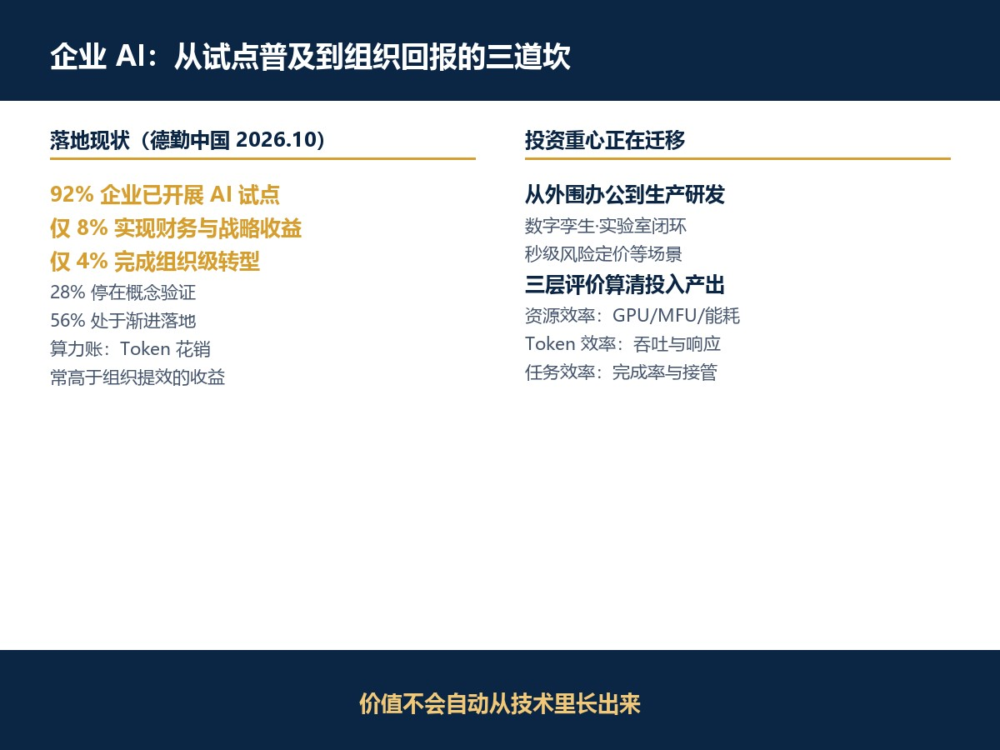

德勤中国 2026 年 10 月发布的调研给出一个耐人寻味的数字：92% 的企业已开展 AI 应用试点，但只有 8% 认为投入实现了财务与战略收益，真正完成组织级转型的仅 4%。AI 的使用已接近普及，回报却高度稀缺。这道落差，正在成为企业数字化决策者必须回答的核心问题。

一、事实层面：普及率很高，规模化很少
把调研数据拆开看，落差更加清晰。在已开展试点的企业中，28% 仍停留在概念验证阶段，56% 处于渐进落地，真正进入规模化推广和产生损益表财务影响的企业占比均只有 4%。换句话说，绝大多数企业买到了工具，却还没有把工具变成利润。
成本端的账同样直观。以递交招股书的模型公司 Anthropic 为例，2026 年上半年按 Token 调用计费的收入达 131 亿美元，占总收入 80%；同期算力与基础设施费用高达 89.45 亿美元，占营收 55%。有企业高管坦言，购买 Token 的开销，已经超过人员优化省下的钱。企业高喊"All in AI"，财务账却并不好看。
值得注意的是，高金与蚂蚁集团研究院的报告显示，行业竞争焦点已从参数规模和对话能力，转向智能体在真实业务中的流程嵌入与商业变现。单纯的算力比拼和概念验证，已无法支撑企业的投资回报预期。
二、第一道坎：个人提效不等于组织提效
为什么普及率与回报率之间隔着一道鸿沟？受访专家的判断指向同一个症结：点状工具的使用，没有改善一段完整的业务流程。白领用 AI 写会议纪要、做翻译、画 PPT，个人确实更快了，但这些零散提效既没有反映到部门产出，也没有体现在公司的收入和利润上。
当投入包含平台、算力、模型部署和高昂的人员费用时，如果创新始终是点状的，简单的效率提升根本覆盖不了基础设施成本。这是很多企业"用了 AI 却算不平账"的根本原因——它们改造的是工具，不是流程。
对研究院服务的制造、金融、教育等客户而言，这一点的现实含义是：AI 项目的立项标准，应从"我们部署了什么模型"转向"我们重构了哪条流程、由谁负责、如何计量"。
三、第二道坎：把算力当成生产成本来管理
Token 正在成为 AI 应用中的交易媒介。围绕 Token 的算力定价权，被视为下一阶段竞争焦点。但从经营角度看，Token 消耗量本身并不等于业务价值——消耗增加，可能来自业务扩大，也可能来自重复推理、失败重试和无效协同；GPU 利用率高，也不能直接证明任务结果有效。
较为务实的做法，是把 Token 支出纳入生产成本管理：建设企业级 Token 管理平台，统一模型入口、调用配额、模型路由、成本归集、预算管理和安全审计，厘清每一份算力消耗对应的业务产出。没有这本账，投入回报就无从谈起。
算力运营方一侧同样要重新算账。设备折旧、电力、运维和资源闲置都要计入成本，容量规划与扩容节奏应紧贴实际业务，避免资源长期闲置。"切忌盲目囤卡扩规模"，已成为业内对重资产 AI 投入的共同提醒。
四、第三道坎：从外围办公走向生产研发
过去两年，企业 AI 应用主要集中在客户服务、营销和 IT 编码领域。如今投资重心正在向研发与核心供应链迁移——制造业构建数字孪生闭环的"自演化工厂"，医药行业用 AI 提出假设、机器人执行实验的"实验室闭环"，金融服务业实现秒级风险定价。
这一迁移意味着 AI 从"外围提效工具"变成"核心生产能力"。它的门槛更高：需要产业数据标准、流程重构和复合型人才配套，也更需要业务部门而非IT部门主导。对产业园区和行业协会而言，谁能率先沉淀行业数据标准与场景样板，谁就能在下一轮落地中占据主动。
五、趋势判断：从能力竞争转向商业闭环
其一，评价标准会从单点性能转向系统有效算力。资源效率看 GPU 利用率、模型浮点算力利用率与能耗，Token 效率看吞吐与响应，任务效率看完成时间、成功率与人工接管情况。三层指标连起来，才能判断资源是否真正转化为有效产出。只报参数的叙事将逐步失去说服力。
其二，计费模式将从席位订阅走向工作量乃至业务结果定价。当智能体深度嵌入生产流程，"按人头卖软件"的逻辑会被"按完成的任务、按创造的结果收费"取代。这将重塑软件、咨询与外包服务的商业模式。
其三，普惠算力与国产生态会成为中小企业落地的关键变量。在外部算力供给约束收紧的背景下，做强普惠算力、降低中小企业用算门槛，决定 AI 红利能否从头部企业扩散到更广泛的市场主体。研究机构与公共服务平台在其中大有可为。
其四，治理与标准会追上应用速度。产业AI标准、数据安全流通规范、智能体工程与模型安全测试规则的完善，将直接降低企业试错成本。可以预期，"会不会用"将让位于"能不能合规、可持续地用"。
结语
企业 AI 已经走过"要不要用"的阶段，进入"怎么用出回报"的深水区。92% 与 8% 之间的落差，不是技术问题，而是组织、成本与评价体系的综合问题。对服务产业客户的研究机构而言，帮助客户算清算力账、重构流程、建立可计量的评价框架，比推荐某一个模型更有长期价值。
本文所引数据来自公开调研与报道，相关分析为产业趋势研判，不构成投资建议。